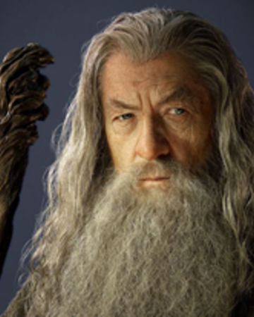

Cuando llegó a la tierra media tomó forma de anciano, es alto (de 1,80 cm.), tiene una barba larga y blanca hasta mas abajo de la cintura, nariz aguileña y cejas largas y espesas. Al principio se le conocía como Gandalf el Gris por su vestimenta, que era una capa y un sombrero de color azul. Se comenta que Tolkien se inspiró en el dios nórdico Odín cuando se manifestaba como el Viajero para vestir a Gandalf. Con esta apariencia y color se le conocería como el que menor importancia tenía dentro de los Istari, aunque al llegar a la Tierra Media, Círdan supo ver su grandeza de espíritu y le entregó uno de los Tres anillos, Narya, el Anillo de Fuego, con el que infundiría valor y esperanza allí donde pasara. Después de su resurrección tras haber derrotado a un Balrog de Morgoth en Moria (Khazad-Dûm), se transformó en Gandalf el Blanco, "Caballero Blanco", o Saruman como debería haber sido.
Fue un miembro poderoso del Concilio Blanco, tanto, que incluso Galadriel le propuso como líder del mismo, cosa que Saruman rechazó, ya que él era el Jefe del Concilio y tenía sus propios intereses, Gandalf también lo había rechazado ya que no quería estar atado a otros excepto a quienes lo enviaron a la Tierra Media. Tras guiar a Thorin y Compañía hasta el Bosque Negro, participó en la expulsión del Nigromante de Dol Guldur, y más tarde reapareció en la Batalla de los Cinco Ejércitos.

Tuvo un papel fundamental durante la Guerra del Anillo, ya que descubrió la localización del Anillo Único en manos del hobbit Bilbo Bolsón en la Comarca. Sin embargo, sus sospechas no se confirmarían hasta que investigó todos los datos posibles de la historia del Anillo en las bibliotecas de Gondor e interrogó a Gollum (cuya captura y entrega encomendó a un excelente cazador y buen amigo suyo), labores por las que se no volvió a La Comarca en nueve años.
Cuando Bilbo deja la comarca para dirigirse a Rivendel, le deja a su sobrino Frodo todas sus posesiones, entre ellas el Anillo único Gandalf le pide que evite al maximo el uso de él, a partir de 3004 T. E., Gandalf empieza a hacer visitas periódicas a Frodo para tener el anillo vigilado. En 3018 T. E., Gandalf realiza su última visita a Frodo. Para ese entonces, Gandalf ya tiene la certeza de que el anillo de Frodo es el Anillo Único, y le advierte al hobbit sobre el peligro que corre al tenerlo, ya que su dueño Sauron desea recuperarlo. Para evitar que el Único caiga en poder del mal, Frodo emprende su viaje con él, en primera instancia hacia Rivendel, en el camino Gandalf encuentra a Radagast el Pardo quien le comunica que Saruman requiere urgente de su presencia, por lo que se despide de Frodo, indicándole que le vería en Rivendel.
La razón del llamado de Saruman, como descubrió una vez en Isengard, era el de comunicarle su intención de hacerse con el Anillo y ofrecerle un lugar en el régimen que fundaría una vez que derrotase a Sauron pero Gandalf se negó y el Mago Blanco lo aprisionó en una celda de Orthanc. Sin embargo, logró escapar subido en el Águila Gwaihir hasta Edoras aprovechando que Saruman apenas prestaba atención a los animales. Allí, trató de advertir al Rey Theoden, quien no le hizo caso y, en su lugar, le invitó a que escogiera un caballo de sus establos para marcharse. Gandalf escogió a Sombragrís, un caballo "muy de su gusto pero no del rey", descendiente directo de Felaróf (el caballo blanco de Eorl), al que persiguió por tres días antes de lograr amansarlo y montarlo hasta Rivendel. Participó en el Concilio de Elrond donde habló a todos del Anillo y se ofreció a guiar a Frodo y a la Compañía del Anillo en su viaje. Desgraciadamente, en Moria se separó de la Compañía, al enfrentar al Daño de Durin, un Balrog de Morgoth que se había aseñoreado de Moria.
La batalla los llevaría a caer del Puente de Khazad-dûm a las profundidades de la Tierra y, de ahí, a lo alto del Celebdil, donde Gandalf abatiría finalmente al Daño. Sin embargo, las heridas del Mago era graves y murió. Sin embargo, el Vala Manwë no podía permitir que muriera sin completar su misión por lo que lo hizo volver de entre los muertos más poderoso que nunca y lo envió por Gwaihir a Lothlórien, donde se le impusieron sus ropas blancas. Así convertido en Gandalf el Blanco y montado en Sombragrís, volvió a Rohan, donde se reencontró con los Tres cazadores (Aragorn, Legolas y Gimli) y fue con ellos a Edoras a salvar al Rey Theoden de la influencia de Saruman y Gríma Lengua de Serpiente.